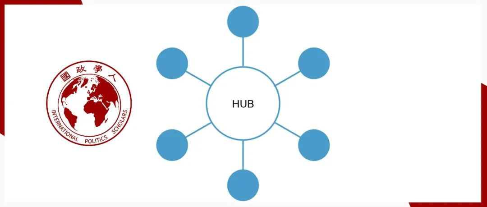
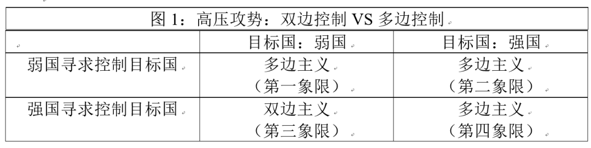

收录于合集

作品简介
作者： 车维德（又译作维克托·车，Victor Dong Cha），韩裔美国学者，美国乔治城大学埃德蒙·A·沃尔什外事学院教授、美国国际战略研究中心(CSIS)高级顾问，长期专注于美韩关系及美国对朝鲜半岛的外交政策研究。曾出任白宫国家安全委员会（NSC）亚洲事务主任，在小布什执政期间担任对朝鲜事务的首席顾问。曾是特朗普政府驻韩大使的提名人选。
编译： 姚寰宇（国政学人编译员，山东大学东北亚学院）
来源： Cha, V. D. (2010). Powerplay: Origins of the US alliance system in Asia. International Security , 34(3), 158-196.

内容提要
二战后，美国在东亚地区分别与韩国、台湾和日本建立了各自分立的排他性同盟，这种“轴辐式”同盟体系与其在欧洲所推崇的多边安全同盟体系大相径庭。东亚地区之所以呈现出以双边主义为主导的安全结构，这与美国在二战后对该地区进行规划时背后的“高压攻势（power play）”的基本逻辑不无关联。“高压攻势”意味着构建一种非对称的同盟，旨在对弱小盟友的行动施加最大程度的控制。美国在东亚地区建立的一系列双边同盟固然有遏制苏联威胁之意，但另一个合理的解释是遏制其“无赖盟友（rogue allies）”——一群狂热的威权领导者们——可能会为了各自在国内的合法性而将美国拖入其本身并不想参与的大规模战争之中。美国对“多米诺理论”的笃信更坚定了其防止出现上述结果的决心。杜鲁门政府和艾森豪威尔政府认为，制约东亚地区亲西方的威权领导人最好的方式是建立双边同盟而非一个更广泛的地区多边机制。因此，今天东亚安全的双边主义正是美国这种选择的历史产物。
文章导读
二战后，美国为何在东亚地区追求构建双边同盟网络，而不是和其在欧洲、东南亚和南太平洋地区所做的那样建立多边安全同盟呢？在东亚地区，美国分别与韩国、日本和台湾地区建立了互不统属且排他的同盟关系，从而形成了杜勒斯所谓著名的“轴辐式（hub and spokes）体系”——直到今天，这种双边布局仍是影响东亚地区安全结构的最显著且最持久的因素。许多国际关系学者为亚洲的双边主义（bilateralism）提供了诸多解释，但这些理论都过于武断，有的甚至自相矛盾。他们都忽视了美国的偏好这一关键变量：美国需要对存在潜在危险的盟友施加最大程度且具排他性的控制。
作者认为，东亚地区出现以双边主义为主导的安全架构的原因是美国对该地区进行战后规划时背后的“高压攻势（powerplay）”原理。作者将“高压攻势”定义为“ 一种不对称同盟的建构，旨在对弱小盟友的行动施加最大程度的控制 ”。诚然，美国在东亚地区建立一系列双边联盟的目的是为了遏制苏联，但另一个合理的解释则是美国为了遏制其在该地区的反共盟友，因为这些盟友可能会发起一些攻击性行为，进而将美国拖入一场并不乐见的大规模战争之中。强调美国避免卷入这种大规模战争的需求意味着坚信所谓的“多米诺理论”——亚洲地区的一个倒向苏联阵营的小国可能引发连锁反应，使得大批国家统统倒向苏联。
尽管美国同欧洲国家结盟的目的也是为了建立控制，但其控制的范围却局限于在美国和北约的安全保护伞之下，塑造这些盟国战后的政治发展和经济复苏。 但是在东亚地区，美国在这群潜在的“无赖盟友（rogue allies）”身上遇到了更多的问题——即狂热的威权领导人们可能会出于维护自身在国内统治合法性的原因发动战争，而美国并不想参与其中，因为美国正准备在全球范围内与苏联展开旷日持久的斗争。 今天的东亚安全双边主义正是美国试图解决上述问题的历史产物。
高压攻势理论对多边主义和权力使用等方面的学术研究有所贡献，该理论补充了时下流行的，由自由主义制度者（liberal institutionalists）和外交政策的国际主义者（foreign policy internationalists）所提出的一个因果命题，即多边结构和规则是控制一国权力、遏制单边主义倾向的最佳途径。例如，许多学者认为将中国嵌入多边机制是管控中国崛起和促使中国融入国际体系的最明智的方法。也有人认为，当美国允许自身被在其协助下建立的多边机制所约束时，美国自身的权力与领导力最为有效。 作者试图通过证明“权力的不对称（power asymmetries）‘选择’（select）了双边或多边等不同类型的结构以实现最大的控制”这一理论，来近一步讨论上述问题——如果小国试图控制大国，那么多边主义行之有效；但是如果大国寻求控制小国，双边同盟更易达成目标。
在摆出要研究的问题后，作者将介绍同盟政治中的高压攻势理论。随后作者考察了二战结束时美国在亚洲的战略设想和战略实践。然后作者用该理论解释了杜鲁门政府和艾森豪威尔政府与蒋介石政权、韩国和日本建立双边同盟的决策过程。然后，作者又展示了美国在二战结束之际和朝鲜战争期间反对在亚洲建立多边结构的过程。最后，作者总结了一些反对意见并提供了未来研究的路径。
01
谜团——为何没有亚洲版的北约？
The Puzzle—Why No Asian NATO?
20世纪50年代初，北约的12个成员国已经就组建共同的官僚机构、一体的军事计划和指挥结构等方面达成共识。在亚洲的部分区域，美国也曾追求多边主义，例如其分别于1951年和1954年创建的太平洋共同防卫组织（ANZUS，包括澳大利亚、新西兰和美国）以及东南亚条约组织（SEATO），尽管相较于北约而言这些组织较为松散。相比之下，在东亚地区，美国选择建立一个双边同盟网络，即所谓的“旧金山体系”（San Francisco system）或“轴辐式体系”——这个体系以美国为“轴”，以彼此之间无明显关联的双边条约为“辐”：这些双边条约包括1951年9月签订的《日美共同防御援助协定》、1953年10月签署的《韩美共同防御条约》和1954年12月签订的《美台共同防御条约》。作者梳理了当前国际关系学界对这种现象的解释，这些解释包括东亚地缘政治格局、历史路径依赖，以及区域内国家间互信和共有价值观的缺失、种族差异、区域内贸易的低水平、政体的多样性和威胁来源的多元化等。随后作者指出，分析多边主义的不利条件与理解美国为何在东亚地区采取双边主义路径这两个问题并不能混为一谈，如果多边主义是一种更为高效的社会组织形式（如透明度提高、交易成本下降、经济规模扩大等等）那美国为什么还要在东亚地区追求双边主义呢？
02
高压攻势
Powerplay
（一）俾斯麦与亚洲
Bismarck and Asia
所有的同盟都试图塑造其成员的行为，但盟友之间的权力不对称决定了控制如何在其内部运作。德国宰相奥托·冯·俾斯麦曾经说过， 最有效的同盟是马和骑手的联盟，而不是两个骑手（没有马）的联盟。 因此， “同盟是施加控制的工具” 这一理念在实践中得以很好地确立。对于实力相仿的双边或多边盟友而言，控制通常通过某种相互妥协的形式来协商解决。然而，对于能力不对称的同盟关系而言，双边联盟可以成为强有力的控制工具；如果实力较弱的盟友依赖于较强的成员提供的好处（如安全和声望），那么实力较强的盟友就享有很大的影响力。双边联盟作为控制手段的概念，挑战了多边主义在当代国际关系和外交政策中的优点的论断。例如，结构自由主义认为，控制最好由多边机构来管理。无论这个国家是正在崛起中的中国，或是奉行单边主义的美国，自由主义者都主张通过建立多边机制将它们纳入一个具有规则和义务的体制之中，而这些规则和义务必须服从于体制内其他成员的共识。
（二）谁控制谁？
Who controls whom?
在谁控制谁这个问题上，自由主义的控制概念与高压攻势的概念截然不同。通常，多边主义是对另一个国家施加控制的首选战略，但这也需要分情况讨论。图1对各种潜在情况进行了分类。如果一个弱国寻求控制一个强国，那么“小人国战略（Lilliputian strategy）”可能是最有效的，即小国通过组建集体对大国构成约束从而实现其控制目的，（见图1，第二象限）。无论是以同盟国身份还是以国际机构成员国身份，多边约束（multilateral constraint）都是对大国进行约束、阻止单边主义、给予小国发言权和投票权的必要条件。同样，如果一个大国寻求对另一个大国进行控制（图1，第四象限），那么多边控制可能依旧是最有用的。这个大国可以通过建立双边联系来寻求控制另一个大国，但这样做代价高昂；它还需要与另一个大国进行谈判和妥协。将目标国嵌入多边同盟中，可以减少寻求控制所带来的成本，还提供了与“小人国战略”同样的约束。如果一个弱国试图控制另一个弱国(图1，第一象限)，多边主义可能是唯一的选择，因为弱国很少有独自施加控制的资源。
然而，如果强国试图控制弱国，那么双边联盟是更好的选择（图1，第三象限)。高压攻势模式表明， 大国可以通过与盟友达成一系列双边安排，加强自己的能力，并最大限度地提高自己的影响力，而不是任由自身的影响力在多边论坛中被稀释。 正如罗伯特•卡根(Robert Kagan)所指出的，实力较弱的国家寻求多边主义；那些强大的国家则倾向于避开普遍规则和多边机制的约束。

（三）历史中的高压攻势
Powerplay throughout history
高压攻势的例子在近代以来国际关系史中经常出现。例如，1815年成立的用以替代更大范围的意大利联盟的奥地利—那不勒斯秘密同盟（secret 1815 Austro-Neapolitan alliance），使得奥地利能够更直接地双边控制较小的实体。作为提供安全的回报，奥地利得到那不勒斯的承诺：没有奥地利的许可，那不勒斯不会改变其政治体制。三十年之后奥地利在1849—1850年，与托斯卡纳（Tuscany）、摩德纳（Modena）和帕尔马（Parma）分别签订条约，使奥地利的影响力超过了这三个国家统治者。1866年，普鲁士与巴伐利亚（Bavaria）、符腾堡（Württemberg）和巴登（Baden）结盟，阻止了可能削弱俾斯麦领导地位的南德意志联盟（South German union）的形成。当世界试图将崛起中的中国嵌入多边机制以限制其硬实力并塑造其偏好时，中国更倾向于建立深入的双边关系。例如，在东南亚地区，中国政府更倾向于同东盟成员国进行双边交易，以便最大限度地发挥其影响力。在第二次世界大战结束之际，美国考虑到东南亚小国的安全架构，拒绝接纳任何曾是该地区殖民者的欧洲大国，因为不希望看到其影响力被稀释。可以说，正是出于类似的原因，乔治•W•布什(George W. Bush)政府倾向于推行强烈的双边主义甚至单边主义，而非多边主义。小布什政府没有单独行动，也没有与其他国家一起行动，而是选择与精心挑选的国家建立紧密的一对一关系，以最大限度地提高美国实现其目标的能力。
03
美国在亚洲高压攻势体系的起源
Origins of the U.S. Powerplay System in Asia
二战前美国全球战略的一大特点是对于在亚洲地区做出重大军事承诺模棱两可，对该地区事务的参与也仅限于促进市场经济的门户开放与传教活动。然而冷战迫使美国在东亚地区建立同盟，以作为其不断扩张的全球军事基地链条的一部分。杜鲁门和艾森豪威尔政府都面临着两个问题： 第一个问题是，亚洲有着亲西方的潜在“无赖盟友”——这里指的是有着阴晴不定的威权领导人台湾和韩国，还有尚未完成国内机制改革的日本——他们可能发动单边侵略，将美国拖入一场大规模的区域战争。 第二个问题是，如果这些国家/地区中有一个倒向敌对阵营，那么可能引发多米诺效应。 当时，美国的国家情报评估部门（National Intelligence Estimates）接受了多米诺骨牌理论的逻辑，并将其应用于亚洲。 无赖盟友的存在和对多米诺骨牌理论的笃信结合在一起，为美国设下了一个可怕的牵连困境： 反共、亲西方的冒险主义将在亚洲大陆引发一场美国不愿打的战争，而美国不得不结束这场战争，否则可能丢掉整个地区。 为了避免这一结果，美国与台湾、韩国和日本建立了一系列深入、紧密的双边同盟，以控制它们使用武力的能力并培养它们在物质和政治上对美国的依赖。 华盛顿相信，只有这样做，才能获得对另一个国家使用武力的主权权利施加影响所需的超乎寻常的控制等级。 （见图1，第三象限）。 与此同时，美国在亚洲无意将这些双边同盟扩展为更大的多边网络，因为这样做不仅会稀释美国对这些国家的控制力，而且无益于加强防御和威慑。 随后作者用丰富的史料论证了自己的观点。
04
台湾：拴住蒋介石
Taiwan: Chaining Chiang
1949年，美国原本已经打算放弃对蒋介石政权的支持，接受中国大陆改天换地的现实。然而，1950年6月25日朝鲜战争的爆发似乎为该地区带来了更广泛的挑战，这极大地改变了美国的威胁认知。随着美国介入朝鲜战争，并于1950年7月派遣第七舰队驶入台湾海峡，它实际上宣布了对台湾的新防御承诺，这一承诺于1954年正式确立。在成为美国的新盟友后，蒋介石丝毫不掩饰其军事“反攻大陆”的野心并开始着手落实其计划。朝鲜战争结束后，艾森豪威尔政府对蒋介石政权针对大陆的单边行动和其他挑衅行为日益关注，对“受其牵连”的恐惧也与日俱增。埃森豪威尔政府面临一个双重威慑困境： 他必须表明美国震慑中国大陆的决心，但同时又要确保蒋政权不会将此解读为进攻大陆的信号。美国国务院内部备忘录明确指出，与蒋介石政权结盟有两个目标：阻止中国共产党和控制台湾当局。作者通过分析指出，美国对蒋介石政权的防卫承诺与其对台湾的约束是分不开的。
同时，美国准备了一份三阶段应急方案以防中国大陆解放台湾，这也是“高压攻势”在美国计划中的另一个表现。方案的第一阶段称， 美国会为蒋政权提供后勤和物资支持，但在有证据表明大陆的进攻并非由蒋挑起之前，美国会选择按兵不动。 应急方案是为了应对冷战中可能出现的台海冲突，但并没有规定美国采取一触即发式的反应。只有理解美国希望利用双边同盟来控制台湾的意图才能体会到这一计划的精妙之处。
05
韩国：制止李承晚
South Korea: Rhee-straint
韩国第一任总统李承晚在其1948年—1960年的任期中毫不掩饰其通过武力统一朝鲜半岛的愿望。李承晚政府采取“北进统一”的政策，拒绝同朝鲜的和平共处。因此同台湾的情况一样，美国担心受韩国“牵连”而不得不参战——美国并不想在亚洲大动干戈，但也担心李承晚鲁莽的行动会导致韩国政府的垮台并触发多米诺效应。相应的， 美韩同盟也就有了三个功能：首先，同盟是环太平洋包围苏联的大战略中作为同盟网络和军事设施的一部分；其次，同盟将阻止朝鲜的二次进攻，美国地面部队作为“绊网（tripwire）”为美国的介入提供了担保；第三，同盟将制止韩国的冒险行为。
美国针对韩国也制定了应急方案——作战指挥权。 美国的档案显示，艾森豪威尔政府对韩国的控制欲是如此之强，以至于美国保留了韩国军队在朝鲜半岛行动的指挥权。朝鲜战争期间，李承晚曾将韩国军队的指挥权授予联合国军（即美国），但在签署共同防御条约后，两国政府签订了一份备忘录延续这种安排。这种严重损害一国主权的行为，不仅是为了促进联合作战能力，也是为了阻止韩国对朝鲜采取侵略性的单边行动。1953年美国国家安全委员会明确表示，如果韩国单方面对中国或朝鲜的军队发起军事行动，那么（1）联合国军司令部的地面、海上和空中力量将不会直接或间接地支持此类行动；（2）美国不会为这些行动提供任何军事或后勤支助；（3）美国对韩国的所有经济援助将立即停止；（4）联合国军指挥官将采取任何必要的行动，以防止其部队卷入新一轮战争中并保障部队的安全。埃森豪威尔曾坦率的表示如果韩国进行单边军事行动，美国的反应包括采取秘密行动除掉李承晚、扶植新领导人或者直接将韩国从同盟中剔除。因此，美国对韩国军队的控制既是一种同盟牵制工具，也是一种威慑和作战的工具。这种指令性安排不可能在多边同盟体系中得以实现，是美韩双边同盟所独有的。
06
亚洲多边主义错失良机？
Missed Opportunities for Asian Multilateralism?
要想对高压攻势理论进行严谨的检验，不仅需要寻找美国在亚洲力图组建双边同盟的证据，而且需要找到美国有机会在亚洲建立北约式多边安排时无意于此的证据。美国不在亚洲建立北约式的多边安排是因为这样做会损害其“高压攻势”的目标。
二战结束时，美国避免过度扩张的需求促使其在欧洲和亚洲追求多边主义。在西欧，美国推动了欧洲多边防御军队（multilateral European Defense Force）的建立和德军的重整，意图合力制衡苏联在中欧的势力。这些举措使得美国、英国和加拿大能够缩减各自的驻军，仅作为象征性力量存在，同时西欧国家将提供核心力量。战后的亚洲也有类似条件，但尽管如此，美国政策制定者还是拒绝了菲律宾、韩国和台湾等盟友提出有关组建亚洲北约的建议。1949年北约成立后，亚洲地区的领导人们认为需要在亚洲组建一个“太平洋公约”，并多次向美国提出要求，但美国反对这样的行动。作者用详尽的史料和解密文档对这一过程进行了梳理，认为这一系列历史事件体现了“高压政策”的两个方面：第一，美国虽然倾向多边主义并在东南亚进行实践，但东亚地区却是个例外；第二，美国反对在东亚推行多边主义，主要是出于对无赖盟友所带来的牵连困境的恐惧。
07
赢取日本
Win Japan
作为东亚唯一的主要强国，美国认为日本在战后的崛起是不可避免的。1945年日本投降后，美国对日本进行军事占领，其目的是实现日本永久非军事化，使日本永远摆脱法西斯主义。然而，随着冷战的到来，美国从1947年开始就不得不从更加长远的战略角度把日本视作对抗苏联阵营的前线国家。美国的决策者们在对日本进行规划时面临两种选择：一种是继续扩大日本的非军事化，另一种是签署和平条约，让日本独立。但最终美国选择了一个折衷选项，即在占领日本的过程中采取“相反的路线”，重点将其重建为一个反共堡垒上，而不是削弱它的力量。美国最初尝试将日本纳入多边机制中以实施其战略，但由于其他亚洲国家对日本侵略历史的阴影和日本自身缺乏兴趣，这一努力最终付诸东流。随后美国转而与日本建立牢固的双边同盟关系，以遏制冷战中的威胁因素，同时施加美国的控制，将日本建立成一个政治稳定的国家，使其不断地为美国利益采取行动。
美国对日本采取的高压攻势策略相比台湾和韩国更加微妙。美国对于日本的战略和其对战后首任首相吉田茂在亚洲发动一场新战争的担忧没有明显关联。然而，与此同时，控制日本并不意味着要削弱它。随后作者依据史料详细分析了美国对日本做出安排的决策过程并指出，美日关系之间的高压攻势并不明朗，最接近官方承认的是“吉田主义（Yoshida doctrine）”，在该学说的指导下，日本仅维持小规模自卫队且将国家重点放在经济发展。相比选择屈从的吉田政府（在1948年至1956年掌权），美国希望日本在军事领域能够发挥更大作用，但 吉田茂在战后自由经济秩序中重点发展工业且对美日同盟中从属地位的接受也符合了高压攻势理论的逻辑。这是一种非正式的帝国主义式的安排，而日本在其中表现良好。
08
**高压攻势与双边主义的逻辑：投资于“轴”
**
The Logic of Powerplay and Bilateralism: Investing in the “Hub”
一旦台湾、韩国和日本以美国为“轴（hub）”建立起双边同盟，他们对物资和政治的需求一方面最大限度地扩大了美国的影响力，另一方面又最大限度的减少了各个“辐（spoke）”之间建立联系的机会。战后美国的援助对蒋介石政权和李承晚政权都至关重要，美国也以此为要挟，成功使两国领导人屈从。这种有效的威胁不可能通过多边渠道得以实现。 美国不把东亚打造成北约式的集体安全架构是因为这样做并无益处，原因主要有三点：（1）美国军事能力远超其他东亚国家，因此集体安全的安排并不能显著增强美国的军事能力；（2）多边主义并不能增强威慑，因朝鲜战争中联合国军的干预已经证明了美国的安全承诺；（3）如果在东亚奉行多边主义，美国将面临被牵连的风险 （即，美国任何可观的安全收益都伴随着增加的被牵连风险，因为同盟的决定权被从美国手中褫夺并交由一个更大的集体）。 艾森豪威尔对亚洲多米诺理论的笃信更加重了美国追求多边主义的代价，对多米诺效应的恐惧迫使美国在台海或朝鲜半岛爆发战争时进行干预。 虽然美国可以假装漠不关心或不表态以阻止蒋介石和李承晚表现得过于自信，但华盛顿早在同他们结盟前就认识到了高压攻势的重要性——美国本可选择“疏离”的策略以防止被牵连，但是这个选项在两个方面被认为是次优的——首先，缺乏美国的承诺可能会激励对手采取行动；第二，蒋介石或李承晚可能仍会对美国模棱两可的声明进行误判并发动战争。因此，考虑到利害关系，美国需要明确对盟友的承诺以威慑对手，同时需要明确控制以掌控盟友。 此外，组建多边机构可能强化亚洲各国之间的互动，无赖盟友们可能合谋迫使美国采取行动，这将进一步加剧美国对牵连的担忧。
外交史学家可能以美国1951年倡议的《太平洋公约（the Pacific Ocean pact）》为由，对高压攻势理论进行反驳。但作者通过史实对此进行了解释，并指出太平洋公约的提议并不与高压攻势的论点相矛盾，此外太平洋公约失败的种种原因在一定程度上又印证了高压攻势的理论。
09
结论
作者对全文进行了总结，并指出了未来有关高压攻势可以继续探究的三个方向。
首先，尽管美国战后在东亚的高压攻势战略取得了成功，我们仍然需要探究这种控制策略在什么情况下会失败。 对这些条件的进一步梳理将有助于决策者决定在特定区域到底应该采取多边模式还是双边模式。双边战略的有效性取决于盟主能否通过可信的威胁或可信的支持来施加控制。这又可能受到(1)政权类型、(2)合法性或(3)联盟内部谈判等三方面的影响。例如，有关联盟形成和联盟承诺的大样本研究表明，强大和弱小的民主国家之间的联盟可能有利于强国发挥施加控制的能力，因为民主国家倾向于相信其民主盟友的威胁和承诺。如果弱国从同盟中能获得明显的合法收益，那么强国的控制力就会增强。最后，大国能否成功进行控制也将取决于同盟内部出现的复杂多变的交涉与权衡。
其次，高压攻势理论为演绎探究同盟的牵连和抛弃困境提供了新的途径。 同盟理论认为，害怕被牵连的国家通常会对其盟友采取疏远或回避策略。这些策略包括：(1)停止对盟国的物质支持，(2)严厉打击盟友的狂热，(3)安抚敌人，(4)废除同盟。 然而，本文表明，当面临被牵连的恐惧时，国家实际上可能会选择用更坚定更紧密的同盟关系来减轻这种恐惧。因此，本文对进一步区分国家在何时会选择“疏离（distancing）”战略何时会选择“粘附（adhesion）”战略的研究有所启发。 例如，当(1)国家对牵连的恐惧十分强烈(2)存在权力的不对称（即强国寻求控制弱国）时，或者(3)弱国有修正主义议程（revisionist agenda）时，该国可能更倾向于选择“粘附”策略。对“粘附”的其他影响因素也有待进一步探究。如，研究在何种情况下粘附战略会导致“自损八百”将有利于决策者的政策制定。
第三个研究方向涉及更多有关美国最初选择在东亚推行双边主义的遗留问题的研究。 这种双边主义导致了日本的复苏，但也导致了日本与亚洲其他国家的孤立，以及与该地区区域和解的缺失。日本对美国完全依赖，而且战后与该地区缺少区域整合，这些反过来又使多边主义的推行雪上加霜。双边主义的历史继续成为日本外交政策羁绊。例如，由于无法获得亚洲邻国的支持，日本未能成功地取得更大的主动权(例如，成为联合国安理会常任理事国)。
高压攻势的逻辑虽然与当下美韩、美台的关系关联不大，但双边主义的遗产仍在深刻地影响两地战后几代人的思维，这自然削弱了他们对参加新的多边结构的热情。东亚的双边架构仍然是有效的，这在一定程度上是由于人们安逸于旧体制使得它们难以根除。该地区许多新生的多边组织——如美日印澳四国安全对话（QUAD）和六方会谈——在很大程度上是建立在潜在的双边同盟关系之上的，这些都证明了旧的思维方式是多么的阴魂不散。
责编 | 吕紫烟 邵良
排版 | 石寒冰 杜丛竹
文章观点不代表本平台观点，本平台评译分享的文章均出于专业学习之用, 不以任何盈利为目的，内容主要呈现对原文的介绍，原文内容请通过各高校购买的数据库自行下载。
好好学习，天天“在看”